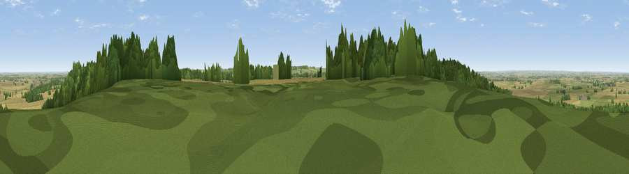

Viewpoint near Knipton
#8018 in England · top 2% of its area beats it · near KniptonThe view, rendered

A 360° render of this exact spot computed from the terrain model, tree cover and land cover — summer colours, afternoon light, calibrated against photographs of famous viewpoints. Real trees, hedges and buildings will differ in detail.
The panorama
Grey silhouette: terrain skyline in each direction (720 bearings, Earth curvature and refraction included). Dashed green: skyline with trees (+15 m) and buildings (+8 m) as obstacles. Blue strip: how far the ground is visible on each bearing.
Where the view opens
Wedge length = distance to the farthest visible ground on that bearing (vegetation-aware). Rings at 10, 25 and 50 km.
What fills the view
47% woodland · 34% grassland · 19% cropland
Angular shares of the visible panorama (visual magnitude), not map area. Landscape diversity 0.46 (0–1 Shannon).
Key numbers
More beautiful places nearby
The staircase of upgrades: each row has a higher view potential than everything closer. Driving times are estimates from straight-line distance, calibrated against real road routing — check an actual route before setting out.
| Place | Direction | Drive | Score |
|---|---|---|---|
| Viewpoint near Belvoir | NE · 2 km | ~5 min | 68.9 |
| Viewpoint near Belvoir | NE · 2 km | ~6 min | 70.8 |
| Broombriggs Hill | WSW · 34 km | ~52 min | 74.4 |
| Viewpoint near Woodhouse Eaves | WSW · 34 km | ~52 min | 77.7 |
| Viewpoint near Mow Cop | WNW · 98 km | ~122 min | 78.9 |
| Viewpoint near Mow Cop | WNW · 98 km | ~122 min | 80.2 |
| Viewpoint near Little Wenlock | W · 119 km | ~144 min | 84.2 |
| The Wrekin | WSW · 120 km | ~144 min | 85.0 |
52.88182, -0.80650 · source: screening · position refined by local search. Computed location — check access rights before visiting.